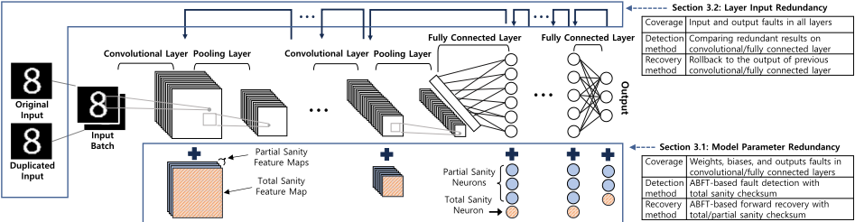
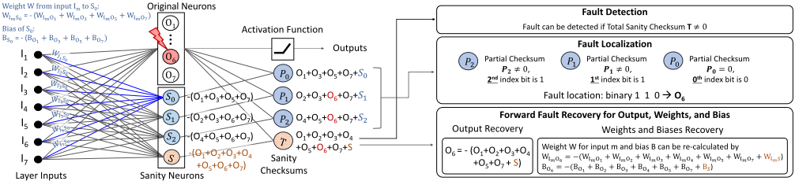
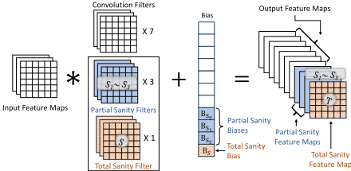
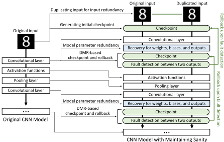
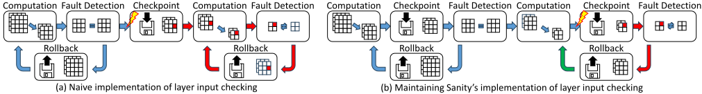
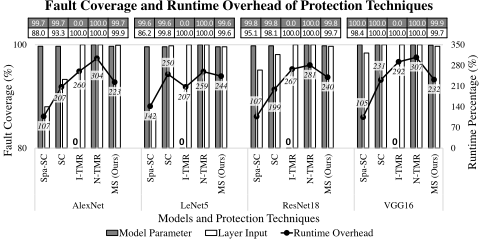

Maintaining Sanity：面向 CNN 的基于算法的综合容错技术
论文针对 CNN 在自动驾驶等安全关键场景部署时易受软错误（soft error）影响、而现有保护方案要么开销过大（如 TMR）要么故障覆盖率不足的问题，提出 Maintaining Sanity。该方法在 Sanity-Check 的 ABFT 空间校验和基础上引入 hamming code 思想，为卷积层与全连接层的权重、偏置和输出添加 total/partial sanity 神经元，实现模型参数故障的检测、定位与前向恢复；同时仅复制网络原始输入并结合 checkpoint/rollback，覆盖包括激活、pooling 在内的层输入故障。在 AlexNet、LeNet5、ResNet18、VGG16 上的故障注入实验显示，其可纠正超过 99.6% 的关键故障，运行时开销约为网络级 TMR 的 72%（约 135% vs 187%），参数额外开销小于 10% 且随网络增大而降低。该工作属于算法级容错研究，与团队存储/互连 IP 的设计与验证技术栈无直接交集。
CNN 在自动驾驶、疾病诊断等安全关键应用中部署时，宇宙射线、热中子或 alpha 粒子等引起的软错误（瞬态故障）可能改变分类结果；现有保护方案存在三大局限：完全覆盖的方案（如 DMR/TMR）空间与运行时开销过大，高效方案故障覆盖不足，或需要额外组件、训练或限制（如 range-restriction 在激进量化下失效）。
扩展最先进的 ABFT 方案 Sanity-Check：(1) 模型参数冗余——借鉴 hamming code，为卷积/全连接层添加 total sanity 神经元与 ⌈log2(n+1)⌉ 个 partial sanity 神经元，通过 total/partial sanity checksum 实现权重、偏置、输出故障的检测、定位与纠正（前向恢复）；(2) 层输入冗余——仅复制网络原始输入，利用上一层冗余输出作为下一层冗余输入，配合 checkpoint/rollback（检查点置于故障检测之前以消除单点故障）实现层输入故障的后向恢复。无需 batch 输入、无需额外训练、适用于量化网络。
故障注入实验（AlexNet、LeNet5、ResNet18、VGG16，各注入 1,000 个关键模型参数故障与 1,000 个关键层输入故障）：Maintaining Sanity 纠正超过 99.6% 的模型参数与层输入关键故障
运行时开销约 135%，为网络级 TMR（约 187%）的约 72%；相比传统模块冗余方法加速约 22%
参数额外开销：LeNet5 少于 10%，且随网络规模增大进一步降低；对比 N-TMR 需要额外 200% 参数
无故障场景下所有技术均未触发误报（fault-free 时无额外性能开销）；论文指出若网络可量化，可消除阈值精度误差、达到 100% 故障恢复
最相关的已有工作 Sanity-Check 仅能检测故障而不能纠正，且不覆盖激活/pooling 等层、依赖 batch 推理计算 temporal checksum、sanity 输入计算过程中的故障不可见；Maintaining Sanity 通过类 hamming code 的 partial sanity checksum 实现故障定位与纠正，通过仅复制原始输入并将 checkpoint 前置来消除层输入盲区与单点故障，无需 batch 输入、无需额外训练、适用于量化网络，以约 72% 于 TMR 的运行时开销取得接近完全的关键故障覆盖。
相关度级别：low
命中能力域：无明显对应
理由：论文是面向 CNN 推理的算法级（ABFT）容错研究：保护对象是 DNN 的权重、偏置与层输入，全部实验在 PyTorch/CPU 上以软件方式完成，不涉及 RTL 设计、时序/物理实现、UVM/SystemVerilog 验证、形式验证、仿真加速或 EDA 自动化，与团队 LPDDR/HBM/DDR5/UCIe 等 IP 的架构、实现与验证能力域均无实质交集。团队 IP 中的可靠性特性（如 ECC、CRC/retry）虽同属容错范畴，但处于协议/电路层，本文的 sanity 神经元/checkpoint 方法无法直接迁移。
建议动作：暂不相关
Jinhyo Jung 1 , Hwisoo So 2 , Woobin Ko 1 , Sumedh Joshi 2 , Yebon Kim 1 , Yohan Ko 1 , Aviral Shrivastava 2 , Kyoungwoo Lee 1 1 延世大学，2 亚利桑那州立大学 jinhyo.jung@yonsei.ac.kr
随着神经网络在安全关键应用中的部署日益普及，确保其在硬件故障发生时仍能展现一致且可靠的性能已势在必行。目前已有多种保护方案被提出用于保护神经网络，但它们要么存在巨大的开销，要么故障覆盖率不足。本文提出了 Maintaining Sanity，一种面向卷积神经网络（CNN）的全面且高效的保护技术。Maintaining Sanity 扩展了当前最先进的基于算法的 CNN 容错技术，利用汉明码和检查点机制，与传统的三模冗余（TMR）技术相比，能够以约 72% 的运行时开销和极小的内存开销纠正超过 99.6% 的关键故障。
可靠性、软错误、瞬态故障、故障注入、基于算法的容错（ABFT）、卷积神经网络（CNN）、可靠机器学习
Jinhyo Jung、Hwisoo So、Woobin Ko、Sumedh Joshi、Yebon Kim、Yohan Ko、Aviral Shrivastava、Kyoungwoo Lee。2024。Maintaining Sanity: Algorithmbased Comprehensive Fault Tolerance for CNNs（《保持理智：面向CNN的基于算法的综合容错》）。载于第61届ACM/IEEE设计自动化会议（DAC '24），2024年6月23日至27日，美国加利福尼亚州旧金山。ACM，美国纽约州纽约市，共6页。https://doi.org/10.1145/3649329.3657355
卷积神经网络（CNN）的迅猛发展使其被广泛应用于自动驾驶、气候分析和疾病诊断等安全关键应用中 [24, 31]。在这类应用中，可靠性——即在存在硬件故障的情况下仍能确保功能正确——是首要挑战。软错误（soft error），又称瞬态故障（transient fault），是指由宇宙射线、热中子或α粒子等外部来源在硬件中诱发的非预期位翻转 [1, 2]。这类错误构成了重大挑战，因为即使软件和硬件组件本身毫无缺陷，它们也可能导致应用功能失常，因而成为安全关键系统设计的核心关注点。
得益于网络的分布式与并行结构以及过度配置（over-provisioning）带来的内在冗余，神经网络天然地对轻微故障具有鲁棒性 [18, 28]。然而，神经网络的黑盒特性无助于理解各个组件
允许免费制作本作品部分或全部内容的数字或纸质副本以供个人或课堂使用，前提是这些副本并非为牟利或商业利益而制作或分发，且副本在首页带有本声明及完整的引用信息。本作品中第三方组件的版权必须予以尊重。对于所有其他用途，请联系所有者/作者。
DAC '24，2024年6月23日至27日，美国加利福尼亚州旧金山
ACM ISBN 979-8-4007-0601-1/24/06.
© 2024 版权归所有者/作者所有。
对软错误的容忍程度或易损性。单比特故障（single-bit fault）就可能改变分类结果，例如将一辆卡车识别为一只鸟 [21]，这在自动驾驶中可能造成灾难性后果。另一项关于神经网络可靠性的研究发现，部署神经网络的未加防护硬件无法满足失效时间（failure-in-time, FIT）率的严格可靠性标准 [12]。晶体管尺寸的急剧缩小和电压缩放导致的软错误率上升使这一问题进一步加剧 [6, 10]。
本文提出 Maintaining Sanity，一种受基于算法的容错（ABFT）启发的、面向卷积神经网络（CNN）的综合且高效的故障纠正技术。图1展示了 Maintaining Sanity 的工作流程。Maintaining Sanity 对现有最先进的基于汉明码的 CNN ABFT [9] 进行扩展，为模型参数提供冗余，从而纠正卷积层和全连接层中权重、偏置和输出的故障。此外，Maintaining Sanity 仅复制原始输入，并通过检查点算法从层输入中出现的任何故障中恢复。由于扩展的校验和算法能够纠正可能已发生的任何故障，卷积层和全连接层的输出被用作向后恢复的检查点。我们在四个流行的 CNN 上开展的故障注入实验表明，Maintaining Sanity 能够纠正超过 99.6% 的会破坏最终分类结果的故障。与其他技术的比较表明，Maintaining Sanity 在几何平均意义上仅以三模冗余方法约 72% 的性能开销，保持了近乎完美的故障覆盖率。同时，它只需极少的额外参数即可做到这一点，这意味着 Maintaining Sanity 甚至可以应用于内存约束严苛的环境。
已有多种保护方案被提出用于保护神经网络免受软错误影响，但它们至少存在以下三个重要局限之一。首先，现有的实现完全故障覆盖的方法会带来严重的硬件成本或运行时开销。应用于神经网络的模块冗余方案能够检测或纠正软错误的影响。然而，高昂的开销使其难以满足安全关键系统的严格约束。其次，旨在提高效率的现有方案可能无法提供足够的故障覆盖率。这些方法或许能高效地保护神经网络的一部分，但可能使其余网络部分暴露于故障之中。最后，现有技术可能需要额外的组件、训练或限制。例如，基于机器学习的故障缓解方案需要额外的网络或训练阶段，而基于取值范围限制的方案在网络高度量化时会失效。
综上所述，本文做出了以下贡献：
https://doi.org/10.1145/3649329.3657355

随着卷积神经网络（CNN）的应用扩展到安全关键领域，提高神经网络的可靠性变得日益重要。因此，为保护神经网络，人们已引入了多种用于识别或纠正错误值的技术。一种直接的保护神经网络的方法是采用双模块冗余（DMR）或三模块冗余（TMR），这是一种众所周知的、用于针对单一组件故障提供完整性证明的策略。这些方法在硬件或软件层面对模块进行两倍或三倍复制，使冗余模块执行完全相同的流程。只要在模块之间进行适当的比较，就可以检测故障（DMR）甚至纠正故障（TMR）。尽管传统计算系统中的安全关键应用已广泛采用 DMR 和 TMR 策略，但复制所需的空间与时间开销使得直接模块冗余难以应用于神经网络，因为神经网络本身已经需要大量计算资源，并且对运行时开销高度敏感 [22]。
另一些研究则尝试借助额外的神经网络训练来对抗错误的影响。Cavagnero 等人 [4] 认为，在训练
另一种方法利用基于取值范围限制的策略，为深度神经网络（DNN）提供轻量级的故障纠正。这些研究假设，最终会改变最终分类结果的关键故障会导致明显较大的数值偏差。因此，基于取值范围限制的解决方案通过全局阈值 [5] 或逐神经元阈值 [8] 来限制激活函数的取值范围，以减轻故障可能造成的偏差幅度。然而，由于诸如 INT8 等数据类型的最先进量化已经利用了大部分取值范围 [24]，基于取值范围限制的解决方案无法在采用激进量化的网络上提供足够的故障覆盖率。
阶段让目标神经网络暴露于故障之中，可以增强神经网络固有的容错能力。另一种策略 [30] 则训练一个小型神经网络，专门用于识别原始目标网络的卷积层所产生的特征图中的故障。虽然这些解决方案能够提供高效的保护，但它们依赖神经网络的黑盒特性来检测故障，缺乏可解释性或覆盖率。此外，这些方法还需要带有充分故障注入试验的额外训练数据，这也是其缺点之一。
仅靠空间校验和是不够的，因为它无法检测层输入中的故障。因此，Sanity-Check 引入了时间校验和，在卷积层和全连接层的输入批次中加入 sanity 输入。sanity 输入被计算为所有其他输入之和的负值，使得空间校验和（即该层所有输出之和）等于批大小与相应层偏置向量/矩阵的乘积。任何偏离该预期和的情况都能让 Sanity-Check 识别出层输入中存在故障。
与本文最相关的工作是 Sanity-Check [25]，它基于算法的容错（ABFT）[13] 的原理，提出了一种用于检测深度神经网络（DNN）推理中错误的机制。Sanity-Check 利用空间校验和的概念来保护全连接层或卷积层的权重、偏置和输出。对于全连接层，Sanity-Check 增加了两个冗余神经元：sanity 神经元和 check 神经元。sanity 神经元的权重和偏置被设置为：在无故障的情况下，无论输入值如何，该神经元的值都等于所有其他输出神经元之和的负值。check 神经元通过将所有输出神经元（包括原始神经元和 sanity 神经元）的值相加来计算空间校验和。非零的空间校验和将表明该层的权重、偏置或输出中存在故障。1 Sanity-Check 对卷积层应用类似的过程，添加一个额外的 sanity 滤波器和偏置，以检测层参数中的任何故障。
虽然 Sanity-Check 能够有效保护卷积层和全连接层，但它并未将覆盖范围扩展到其他层，例如激活函数和池化层。此外，Sanity-Check 还需要通过批量推理来计算时间校验和，这会引入延迟并增加内存压力，使其对于时间敏感的应用或受内存限制的计算环境而言并非最优 [15, 26]。另外，sanity 输入计算过程中发生的故障可能会传播并同时影响原始输入和 sanity 输入，从而使该故障对 Sanity-Check 不可见。
1 由于计算中的舍入误差，Sanity-Check 将校验和与一个阈值进行比较，而不是与 0 进行比较。

我们提出 Maintaining Sanity，一种受基于算法的容错（ABFT）[13] 启发的、面向卷积神经网络（CNN）的综合性故障纠正技术。我们对最先进的 ABFT 方案 Sanity-Check [25] 所提出的思想进行了增强，通过引入汉明码 [9] 的概念来实现故障纠正。我们还对该思想加以改进，将故障覆盖率扩展至整个网络，消除任何单点故障，并将该技术泛化，使其适用于任何 CNN。
我们将待保护的数据划分为两类：模型参数和层输入。模型参数包含卷积层和全连接层的权重与偏置。这些值可以在处理任何输入值之前被读取，从而使校验和算法的生成成为可能。我们假设由于空间开销过高，模型参数的冗余副本不可用。层输入包含送入每一层的中间输入，包括神经网络的原始输入。这些值在将输入值送入网络之前无法被看到，因此无法预先计算 sanity 输入。这两类数据的不同特性要求我们设计各不相同的技术，为每一类提供适当的冗余。
我们提出一种针对模型参数的故障纠正方法，其灵感来自基于算法的容错（algorithm-based fault tolerance）方法。该方法引入了一种错误检测机制 SanityCheck [25]。Sanity-Check 采用空间校验和来识别神经网络中卷积层和全连接层的权重、偏置及输出中的故障。其核心原理是在层内集成额外的运算，以生成一个 sanity 输出。该输出经过设计，使得无论输入值为何，原始输出与 sanity 输出的总和都等于零。然而，必须指出的是，SanityCheck 仅限于故障检测，本身并不具备故障纠正能力。因此，需要对其进行大幅改造，才能将其功能扩展至故障纠正。
我们首先说明该技术如何应用于全连接层。假设一个具有 𝑛 个输出的全连接层，即 𝑂 1 ∼ 𝑂 𝑛 。使用 Sanity-Check 的空间校验和算法对该层进行保护，会得到一个额外的输出 𝑂 𝑆 ，使得 𝑛 𝑥 = 1 𝑂 𝑥 + 𝑂 𝑆 = 0。如果该层的任何权重、偏置或输出被破坏，该等式将不再成立，从而可以检测到故障。我们将这一关键的额外输出 𝑂 𝑆 定义为总 sanity 神经元（total sanity neuron）。有趣的是，如果我们能够识别出发生故障的输出，总 sanity 神经元 𝑂 𝑆 还可用于从故障中恢复。不失一般性，假设一个故障破坏了 𝑂 𝑘 的值。通过修改上述等式，我们可以得到
𝑂 𝑘 的原始值，计算方式为 𝑛 𝑥 = 1 ,𝑥 ≠ 𝑘 𝑂 𝑥 + 𝑂 𝑆 = - 𝑂 𝑘 。为了定位发生故障的输出，Maintaining Sanity 以类似于构造汉明码（hamming codes）的方式添加额外的 sanity 神经元，这些神经元被定义为部分 sanity 神经元（partial sanity neuron）。与汉明码一样，保护该层所需的部分 sanity 神经元数量等于表示该层输出神经元数量所需的位数；因此，对于一个具有 𝑛 个输出神经元的全连接层，所需额外神经元的数量为 ⌈ log 2 ( 𝑛 + 1 )⌉（部分 sanity 神经元）+ 1（总 sanity 神经元）。区别在于，sanity 神经元计算的是输出子集的和，而非奇偶校验值。
In the absence of a fault, the sum of 𝑂 1, 𝑂 3, 𝑂 5, 𝑂 7, and 𝑆 0 should be 0. We define the partial sanity checksum 𝑃 0 as the sum of the partial sanity neuron 𝑆 0 and the partial sum of the outputs corresponding to 𝑆 0 ( 𝑂 1, 𝑂 3, 𝑂 5, and 𝑂 7). More generally, we define partial sanity checksum 𝑃 𝑘 as the sum of the sanity neuron 𝑆 𝑘 and its corresponding output neurons, which have 1 as the 𝑘 𝑡ℎ bit of its index. The total sanity checksum is defined as the sum of the total sanity neuron and all the original outputs. Using the original output neurons and the sanity checksums, we can form codes for each error case, where 0 would represent no fault in the location, and 1 would represent a deviation from the expected output. The minimum hamming distance between these codes is 3, meaning that Maintaining Sanity can locate and correct any fault in the model parameters.
Figure 2 illustrates how Maintaining Sanity adds sanity neurons to protect a fully connected layer with seven output neurons 𝑂 1 to 𝑂 7. The sanity neurons consist of ⌈ log 2 ( 7 + 1 )⌉ = 3 partial sanity neurons 𝑆 0 to 𝑆 2 and one total sanity neuron 𝑆 . The total sanity neuron 𝑆 is formed so that its value is the negative sum of all original output neurons. This can be done by adjusting each weight from the input to the total sanity neuron to be the additive inverse of the sum of the weight from the input to the original output neurons and letting the bias of the total sanity neuron be equal to the negative sum of all biases of original output neurons. A similar process is used to form partial sanity neurons, except that a partial sanity neuron 𝑆 𝑖 is formed only with a subset of output neurons whose 𝑖 𝑡ℎ bit of its index is 1. For example, the partial sanity neuron 𝑆 0 is formed with the output neurons that have 1 as the 0 𝑡ℎ bit in their index, namely 𝑂 1 (binary 001), 𝑂 3 (binary 011), 𝑂 5 (binary 101), and 𝑂 7 (binary 111).
The forward recovery process of the model parameter redundancy, including fault detection, localization, and correction, is illustrated on the right side of Figure 2. To reduce the cost required for fault detection, Maintaining Sanity only checks whether the value of the total sanity checksum 𝑇 equals zero 2 . In the case of a detected fault, Maintaining Sanity checks the value of the partial sanity checksums, 𝑃 0 ∼ 𝑃 2, to locate the fault. In this case, where output 𝑂 6 is corrupted, partial sanity checksums 𝑃 2 and 𝑃 1 are nonzero while 𝑃 0 is 0. The error code for this case would be 110, meaning that Maintaining Sanity succeeded in locating the error in 𝑂 6. Finally, Maintaining Sanity can recover the output 𝑂 6 and the corresponding weights and bias using the Sanity weights, bias, and checksum. If no partial sanity checksum reports a fault, it means the fault affected only the total sanity checksum. In this case, we recalculate the total sanity neuron's weights and bias.

如图 3 所示，同样的思想也可以应用于保护权重、偏置以及卷积层的输出。Maintaining Sanity 在网络中添加 sanity 滤波器和偏置，使得原始特征图的总和或部分和与相应的总 sanity 特征图或部分 sanity 特征图之和为 0。Maintaining Sanity 利用总 sanity 校验和来检测故障的存在，使用部分 sanity 校验和找出故障位置，并纠正与故障位置对应的权重、偏置和输出。与全连接层的保护方式类似，Maintaining Sanity 添加 ⌈ log 2 ( 𝑁 + 1 )⌉ 个额外的 sanity 滤波器和偏置作为部分 sanity 特征图，并为总 sanity 特征图额外添加一个滤波器和偏置。借助总 sanity 校验和与部分 sanity 校验和，Maintaining Sanity 能够检测、定位并纠正全连接层或卷积层中任何损坏权重、偏置或输出值的故障。
我们开发了一种创新方法来保护目标网络每一层的输入值。这是由这些中间输入值的独特性质所决定的：它们不同于模型参数，因此不适用于第 3.1 节所述的保护方法。基于 ABFT 的方法需要对输入计算跨输入的校验和，且无法在单输入环境下保护网络。通过增大输入维度来添加冗余同样不切实际，因为这需要改变网络的架构。因此，我们对层输入采用双模冗余（DMR），并采用检查点与回滚策略来从输入故障中恢复。通过精心的实现，我们可以降低这种复制所需的开销。例如，我们可以利用 CNN 中常用矩阵运算的优化来降低计算成本，从而以可容忍的运行时开销保护包括激活层和池化层在内的所有网络层。
2 由于精度误差，在我们采用 32 位浮点数据类型的实现中，我们检查校验和是否小于某个阈值，而不是检查其是否为 0。

Maintaining Sanity 的层输入冗余具有若干值得注意的实现细节。首先，Maintaining Sanity 并不在每一层都复制输入，而是仅复制原始输入，并将某一层的冗余输出用作下一层的冗余输入。这不仅节省了为每一层生成冗余输入的资源，还消除了潜在的不可检测故障；在每一层的输入复制过程中，原始副本中的故障可能会传播到两个副本中，从而使故障保持未被检测的状态。其次，由于 Maintaining Sanity 不仅为卷积层和全连接层保留输入冗余，还为激活函数和池化层等其他层保留输入冗余，因此 Maintaining Sanity 能够覆盖所有层上的故障。第三，卷积层或全连接层两个输出的比较可以利用第 3.1 节中模型参数冗余的总 sanity 校验和来优化。图 4 中的前向恢复过程为每个输入生成一个总 sanity 校验和，该校验和构成所有输出与总 sanity 神经元或特征图之和。因此，Maintaining Sanity 无需比较来自冗余输出的整个输出张量，而是可以通过比较两个总 sanity 校验和来检测故障。
图 4 展示了 Maintaining Sanity 对一个同时具有模型参数冗余（在第 3.1 节中讨论）和层输入冗余的卷积神经网络（CNN）进行保护的示例。首先，Maintaining Sanity 对网络的第一个输入进行复制。其次，在处理完一个卷积层或全连接层并对权重、偏置和输出执行相应的前向恢复之后，Maintaining Sanity 会生成一个检查点。由于权重和偏置可以通过校验和进行恢复，Maintaining Sanity 只需存储中间输出作为检查点。生成检查点之后，Maintaining Sanity 会对冗余输出进行比较以检测故障。如果检测到故障，Maintaining Sanity 会将过程回滚到上一个卷积层或全连接层的检查点。
最后一个关键细节是消除可能出现的任何单点故障。一种朴素的实现方式可能会在两份副本之间的检查之后发生故障时失效，如图 5 (a) 所示。在该示例中，故障在下一层计算之前破坏了检查点的输入。随后网络检测到该故障并重新执行该层，结果却再次检测到相同的故障。为了避免这一问题，Maintaining Sanity 在检查算法之前存储输入副本，如图 5 (b) 所示。如果这些副本未能通过故障检测过程，该层将使用已存储的输入重新执行。由于已存储的输入在上一层中已经通过了检查过程，因此可以保证它们是无差错的。这种存储与检查指令的交织确保了下一层的所有输入都是无故障的。

总而言之，Maintaining Sanity 基于基于算法的容错（ABFT）执行前向恢复，以纠正模型参数中的故障。它通过一种精心设计的复制算法，对网络中任意层的输入中发现的故障执行后向恢复。Maintaining Sanity 还可以在对目标网络没有任何前提条件的情况下应用：它不要求批量输入 [25]，在量化网络中也能正常工作 [5, 8]，并且无需额外训练即可应用 [4, 30]。
我们在 AlexNet [17]、LeNet5 [20]、ResNet18 [11] 3 和 VGG16 [29] 上实现了 Maintaining Sanity，以量化其故障覆盖率和运行时开销。这些网络是卷积神经网络（CNN）的代表性网络，并已在多项深度神经网络（DNN）可靠性研究中被用作测试基准 [5, 16, 23, 25]。Maintaining Sanity 在 PyTorch [27] 环境中实现，使用 32 位浮点数据类型来表示网络参数。我们在 Intel Xeon 2.2 GHz CPU 上使用 ImageNet 数据集 [7] 开展实验，采用 PyTorch 提供的预训练模型参数，AlexNet、ResNet18 和 VGG16 分别取得了 56.522%、69.758% 和 71.592% 的 top-1 准确率。对于 LeNet5，我们在 MNIST [19] 数据集上对该网络进行了训练，取得了 98.71% 的准确率。
故障注入过程：我们在基线网络对来自测试数据集的一张图像进行推理的阶段中注入单个故障。改变网络最终分类结果的故障被归类为关键故障，我们将其纳入用于评估各保护技术的故障集合中。注意，我们只在最初被正确分类的图像上注入故障，以避免出现注入的故障“纠正”分类的情况。故障被随机注入到模型参数和层输入中，直到
基线保护技术：我们将现有技术与 Maintaining Sanity 一同实现，作为本实验的基准。我们实现了两个版本的 Sanity-Check。其中一个版本（Spa-SC）仅使用空间校验和实现，因为我们的实验环境不使用批量推理。另一个版本（SC）仍然生成时间校验和，将单个输入视为输入批次。我们还实现了两个版本的三模冗余（TMR）。输入级 TMR（ITMR）仅对网络的输入进行三份复制，而网络级 TMR（N-TMR）则对模型参数和输入都进行三份复制。两个版本都在最终输出之前执行一次多数表决，以减少开销。我们测量各基准的故障覆盖率、运行时间百分比和应用成本，以便与 Maintaining Sanity（MS）进行比较。
3 Maintaining Sanity 针对 ResNet 的检查点机制还涵盖残差块内部各层的输入与输出以及批归一化层的参数 [14]。
我们为每个基线网络获得了 1,000 个关键模型参数故障和 1,000 个关键层输入故障。为了加快收集过程，我们仅在 32 位浮点数的指数位中注入故障。该故障模型与其他 DNN 可靠性研究中所使用的故障模型一致 [3, 32, 33]。随后，我们将这些关键故障注入到每种保护技术中，并测量被检测或纠正的故障所占的百分比，以量化故障覆盖率。
图 6 展示了各基线网络中各保护技术的关键故障覆盖率与运行时间百分比。保护技术列于 X 轴上：Sanity-Check 的两个版本（不带时间校验和的 Spa-SC 与带时间校验和的 SC）、输入级三模冗余（I-TMR）、网络级三模冗余（N-TMR）以及 Maintaining Sanity（MS）；两个 Y 轴分别表示左侧的故障覆盖率和右侧的运行时间百分比。故障覆盖率以每种技术两根柱子的形式呈现，其度量方式为被检测或纠正的故障数与注入到模型参数和层输入中的关键故障总数之比。I-TMR 对层输入故障表现出完美的覆盖率，却难以检测模型参数故障。这是因为模型参数故障可能传播到多个输入。SC 技术则表现出相反的行为：能够检测模型参数故障，却在层输入故障上表现不佳。即使是带时间校验和的那一版本，也无法检测注入到卷积层和全连接层以外各层中的层输入故障。另一方面，Maintaining Sanity（MS）表现出接近完美的故障覆盖率，对模型参数故障和层输入故障的纠正率均超过 99.6%。考虑到我们并未注入任何良性故障，这一结果更加令人印象深刻。通过详细分析，我们发现 Maintaining Sanity（MS）未能纠正的故障案例均源于精度误差。如果目标网络可以被量化，那么 Maintaining Sanity 将不再受阈值精度误差的影响，从而实现 100% 的故障恢复。
最后，表 1 展示了每种技术的空间开销。列表示五种保护技术，行表示不同的基线网络。每个单元格给出了
在无错误环境中，各技术相对于基线网络的运行时间百分比也以黑色折线的形式显示在图 6 中。具体而言，对于 LeNet5，我们测量了其在 MNIST 测试数据集上推理阶段的运行时间；对于其他网络，我们测量了 ImageNet 验证数据集中 1,000 张图像的运行时间。在此过程中，没有任何技术触发误报，这表明在无故障场景下，它们与基线模型相比没有额外的性能开销。Maintaining Sanity 的总体运行时间开销约为 135%，仅为网络级三模冗余开销的约 72%，后者的开销约为 187%。所有数值均基于几何平均计算。其他保护技术平均表现出相近或更低的开销，但需要注意的是，它们的高效是以故障覆盖率不够全面为代价的。

| Spa-SC | SC | I-TMR | N-TMR | MS (Ours) | |
|---|---|---|---|---|---|
| AlexNet | 0.04% | 0.04% | 0.0% | 200.0% | 0.53% |
| LeNet5 | 1.27% | 1.27% | 0.0% | 200.0% | 9.09% |
| ResNet | 0.27% | 0.27% | 0.0% | 200.0% | 2.81% |
| VGG16 | 0.05% | 0.05% | 0.0% | 200.0% | 0.59% |
| | Spa-SC | SC | I-TMR | N-TMR | MS (Ours) |
开销，即每种技术相对于基线网络所增加的额外参数数量的百分比。我们的研究结果显示，这些技术在空间开销方面存在鲜明对比。Net-TMR 技术显著增加了参数数量，比基线多出 200%。这种程度的开销在安全关键环境中尤其令人担忧，因为在这类环境中，效率和资源管理至关重要。相比之下，我们的 Maintaining Sanity 技术效率高得多，在保持高故障覆盖率的同时，LeNet5 仅需不到 10% 的额外参数。对于更大的网络，这一开销会进一步降低，使 Maintaining Sanity 更加高效。
随着技术的不断进步，神经网络在安全关键应用中变得不可或缺，各种保护卷积神经网络（CNN）免受瞬态故障影响的方法也随之涌现。本文提出了 Maintaining Sanity，这是一种旨在通过基于算法的容错高效增强 CNN 故障韧性的策略。我们开展的大规模故障注入实验表明，Maintaining Sanity 具有近乎完美的关键故障覆盖率，同时与传统模块冗余方法相比，可将处理过程提速约 22%。未来的工作包括：通过采用 GPU 或 DNN 加速器进行优化来进一步加速 Maintaining Sanity，通过量化来完善故障覆盖率，以及通过考虑批量推理或 TMR 等选项来扩展该框架，从而在性能与可信性之间实现理想的平衡。